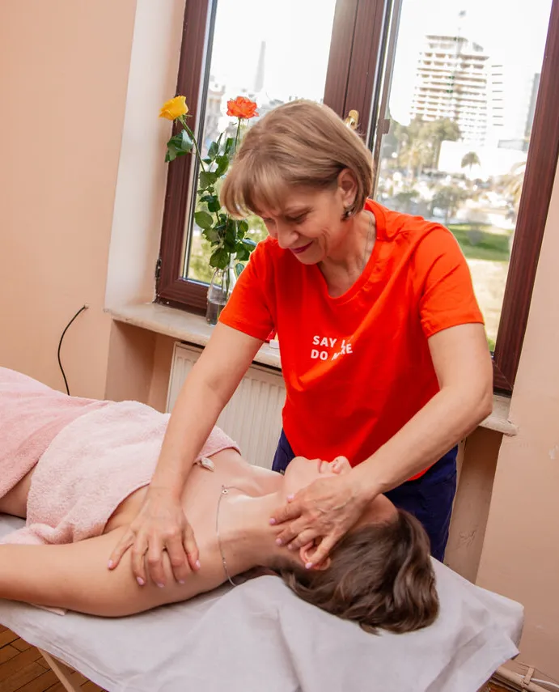
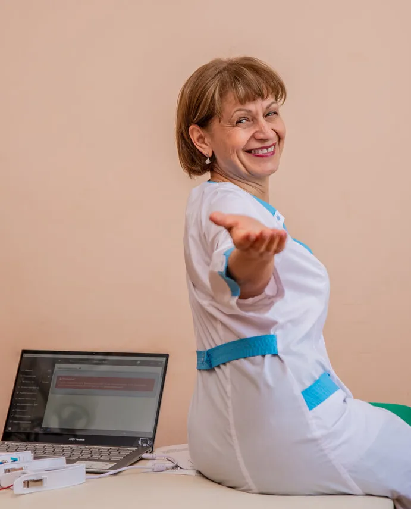
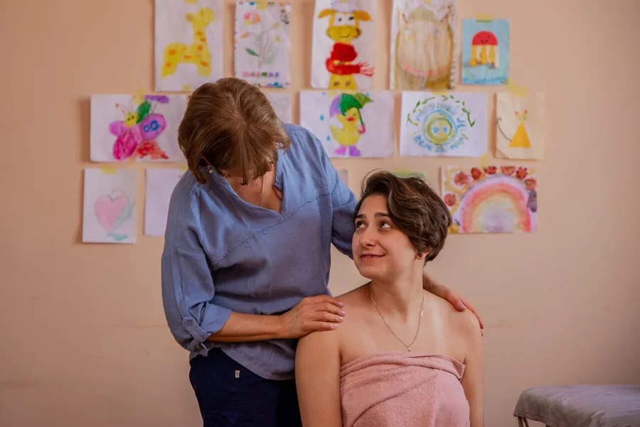
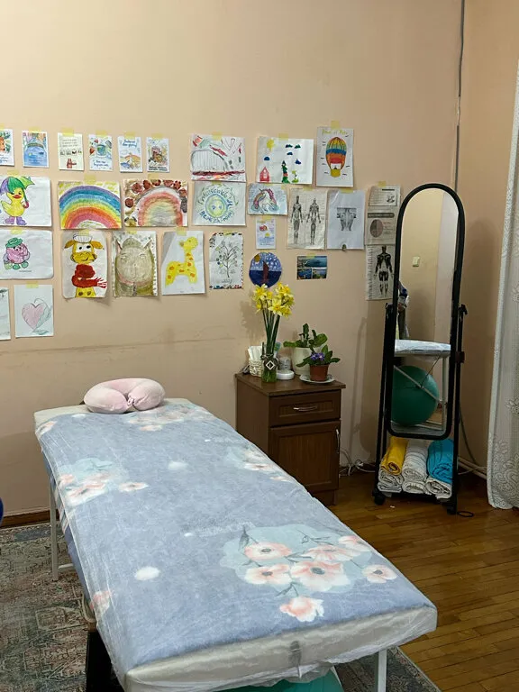
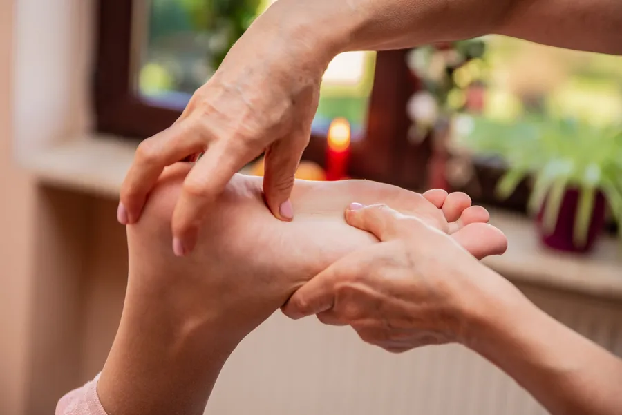
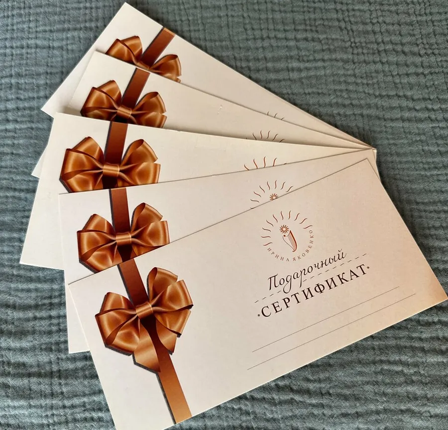
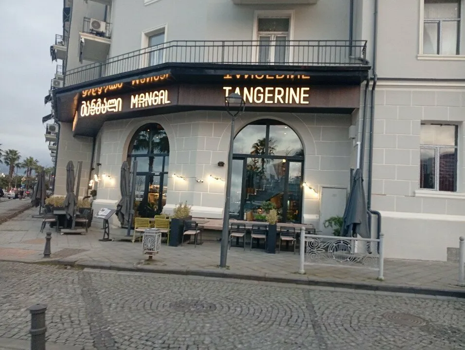

Медицинский массаж
Когда болит спина, шея или поясница
- Глубоко прорабатывает мышцы
- Снимает боль, зажимы и напряжение
- Улучшает подвижность суставов
Сеанс: [ЦЕНА] GEL
Медицинский, лимфодренажный, антистресс и массаж лица. Каждый сеанс Ирина завершает массажем головы, а после предложит чай.

Курс на время поездки
Выберите длину поездки и цель: покажем, в какие дни лучше прийти и какой массаж взять. План уйдёт Ирине в WhatsApp одной кнопкой, она подтвердит время.
1Сколько дней вы в Батуми
2Чего хочется от массажа
сеансдень отъезда
План примерный: между сеансами день отдыха, в первый день после перелёта лучше просто отдохнуть. Точнее Ирина подскажет после разговора. Цены впишем по прайсу Ирины.
Виды массажа
Описания по Taplink Ирины. Можно сказать запрос перед началом: проработать спину или полностью расслабиться.
Когда болит спина, шея или поясница
Сеанс: [ЦЕНА] GEL
После перелёта, жары и долгих прогулок
Сеанс: [ЦЕНА] GEL
Когда нужно выключить голову
Сеанс: [ЦЕНА] GEL
Если работаете за ноутбуком и на удалёнке
Сеанс: [ЦЕНА] GEL
Перед важным днём или фотосессией у моря
Сеанс: [ЦЕНА] GEL
Когда хочется всё и сразу
Сеанс: [ЦЕНА] GEL
Ещё по карточке в Yango Картах: аюрведический, спортивный, корригирующий, антицеллюлитный, лифтинг-массаж и массаж шеи.

Мастер
«Профессиональный массаж, созданный из опыта, внимания и вдохновения»
Ирина, из её Taplink


Фото из карточки в Yango Картах.
Отзывы
Отдыхала в Батуми, из-за дождливой погоды записалась на массаж к Ирине. Супер профессионал! За два приёма сняла боли в спине и более того поправила моё эмоциональное состояние на абсолютный позитив.
Если вы хотите почувствовать себя королевой, то вам определённо нужно посетить массаж у Ирины! Я была на 90 минутах массажа всего тела и лица. Восторг и настоящее волшебство!
Хожу к ней уже 3 года! Всегда спасает меня, если что-то защемило или когда морально вымоталась. Каждый раз разный массаж. Плюс можно говорить запрос перед началом. Лучший специалист в Батуми!
Это не просто массаж, это настоящий ритуал заботы о себе. Отдельное удовольствие: расслабление головы. И здесь невероятно тёплая атмосфера: всегда предложат чай, а иногда ещё и накормят.
Пока гуляла по городу, на карте увидела контакты Ирины. Пришла. Хотела массаж посильнее, а у Ирины получился массаж нежный и с любовью, при этом всё она мне размять смогла.
Брала массаж «Антистресс». Мне промяли каждый кончик пальца, ладони, спину, ступни, но без намёка на спортивный массаж. А супер-изюминка: массаж головы. Цена и качество идеальные.

Подарок
Подарите массаж маме, подруге или себе к отпуску в Батуми. Номинал и срок действия: [НОМИНАЛ], уточним у Ирины.
Заказать сертификатКак найти

Батуми, улица Мемеда Абашидзе, 1/2
Вопросы
Батуми, улица Мемеда Абашидзе, 1/2, в центре города, около 90 метров от морского порта.
Медицинский, лимфодренажный, «Релакс-антистресс», массаж для IT-специалистов и фрилансеров, массаж лица и авторский «Тело + Лицо». По карточке в Yango Картах также аюрведический, спортивный, корригирующий, антицеллюлитный, лифтинг-массаж и массаж шеи. Сеанс Ирина завершает массажем головы.
Да. Выберите на сайте, сколько дней вы в Батуми и чего хочется, и отправьте план Ирине в WhatsApp: она подтвердит время и подскажет, что подойдёт именно вам.
С понедельника по субботу с 9:00 до 21:00, в воскресенье с 9:00 до 20:00, по записи.
Напишите Ирине в WhatsApp или Telegram, телефон +995 597 56 20 20. Оплата наличными или банковским переводом. Есть подарочные сертификаты.